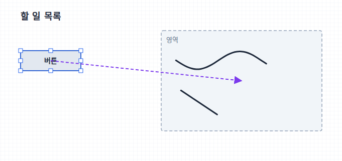
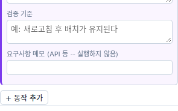
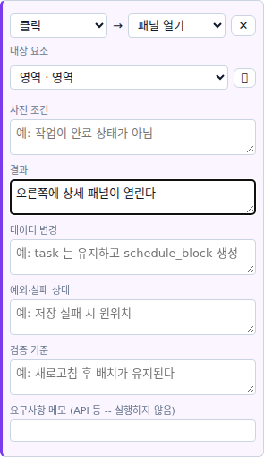
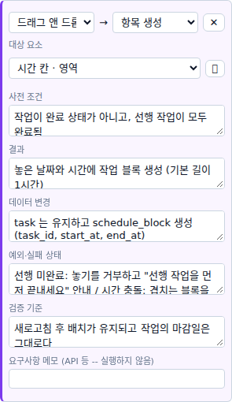
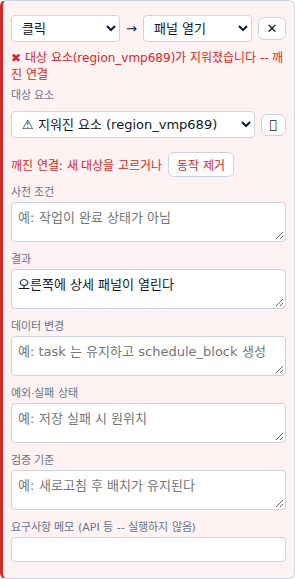
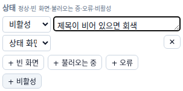
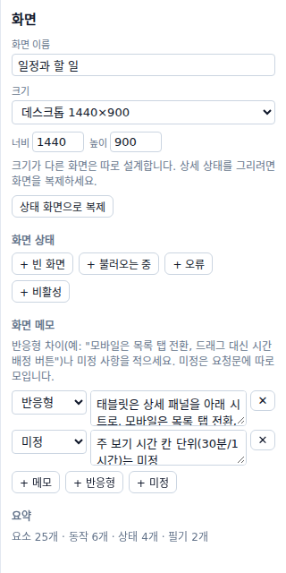
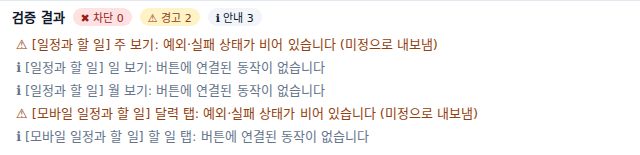

버튼을 누르면 무엇이 되는지 적고, 빈 화면·오류 같은 상태와 빠진 것을 확인합니다
한눈에 보기
먼저 알아 두기
| 칸 | 예시 |
|---|---|
| 사전 조건 | 작업이 완료 상태가 아님 |
| 결과 | 놓은 날짜와 시간에 작업 블록 생성 |
| 예외·실패 상태 | 저장 실패 시 원위치 |
따라 하기 · 1 / 10

따라 하기 · 2 / 10

따라 하기 · 3 / 10

따라 하기 · 4 / 10
따라 하기 · 5 / 10

따라 하기 · 6 / 10

따라 하기 · 7 / 10

| 상태 | 예시 |
|---|---|
| 빈 화면 | 아직 할 일이 없어요 안내 |
| 불러오는 중 | 회색 자리 표시 |
| 오류 | 다시 시도 버튼 |
| 비활성 | 제목이 비어 있으면 회색 |
따라 하기 · 8 / 10

따라 하기 · 9 / 10
따라 하기 · 10 / 10

| 표시 | 뜻 | 내보내기 |
|---|---|---|
| ✖ 차단 | 깨진 연결 · 꼭 필요한 대상이 없음 | 막힘 -- 꼭 고칩니다 |
| ⚠ 경고 | 결과·예외·검증 기준이 비었음 · 목록의 빈 상태 없음 | 됨 ("미정"으로) |
| ℹ 안내 | 동작이 없는 버튼 | 됨 |
알아 두면 좋은 점